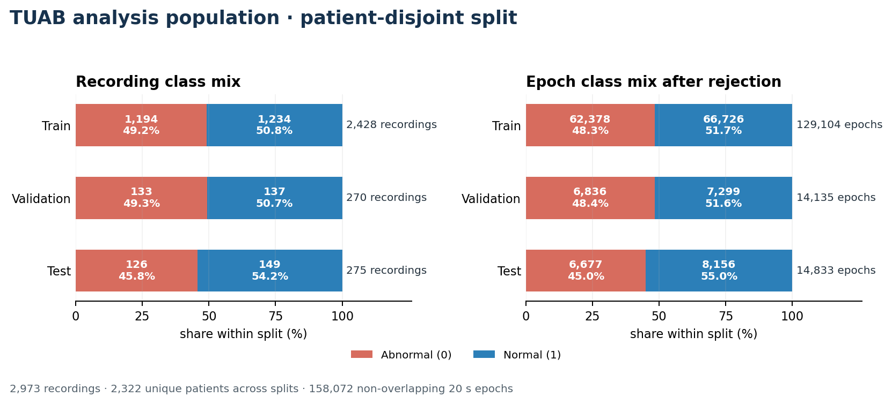
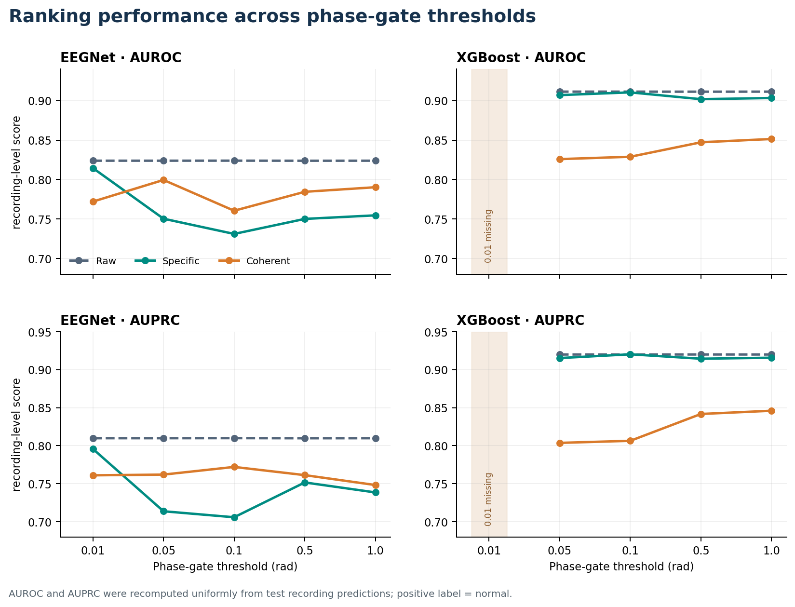
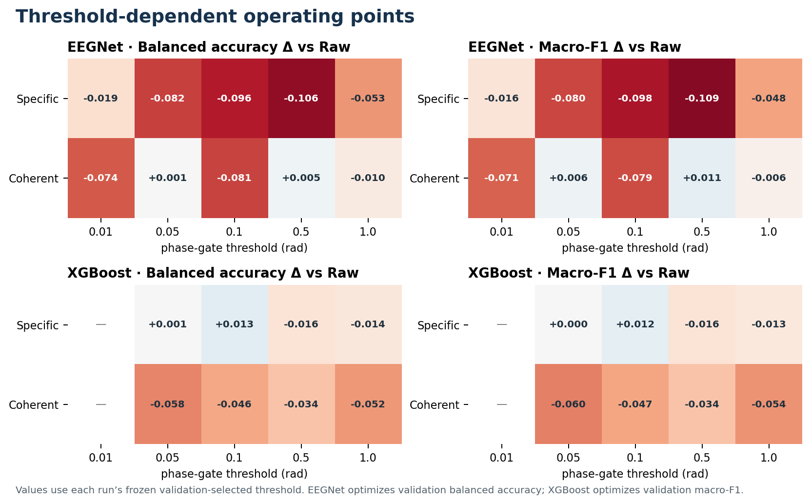
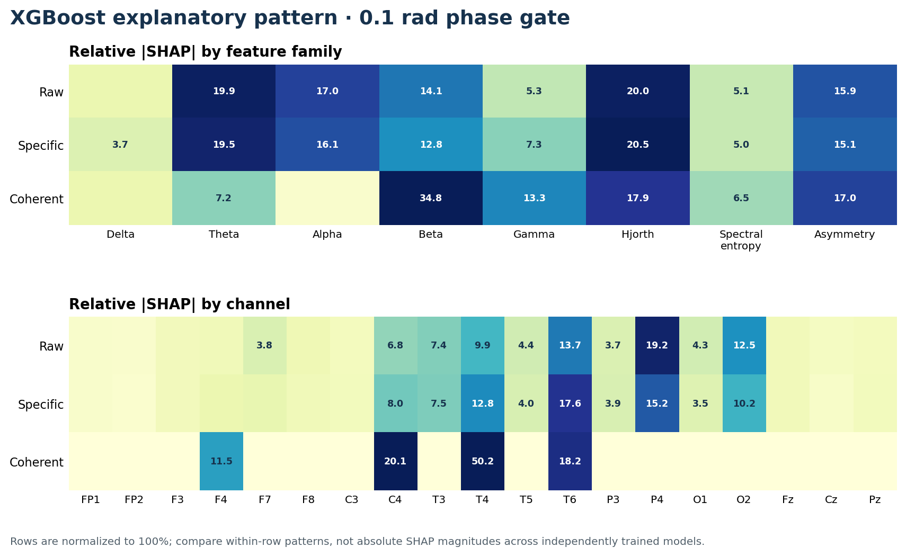

EEGNet 的 Raw 测试 AUROC/AUPRC 约为 0.824/0.810；XGBoost 为 0.911/0.920。没有任何分量设置同时在两种模型及两项排序指标上稳定超过 Raw。
TUAB continuous-component experiment
EEGNet 与 XGBoost
分量分类结果
基于脚本 17–20 生成的 Raw、ECMAD-specific 与 coherent 三分量独立模型， 对五个 phase-gate 阈值进行记录级描述性比较。
0.01radXGB 缺失
0.05rad
0.1rad
0.5rad
1.0rad
Executive readout
结论速览
测试 AUROC 0.911、AUPRC 0.920，与 Raw 相差 −0.001/+0.000；balanced accuracy 与 macro-F1 分别高约 0.013/0.012。该相位也具有最高 specific 验证 AUROC。
XGBoost coherent 的 AUROC 随相位阈值从 0.826 上升至 0.851；EEGNet coherent 的最好测试 AUROC 为 0.800。它不能被简单等同于“纯伪迹”。
五个相位都已触达同一测试集，且仅有单个 seed/单次训练。图中“最好测试值”只能描述当前快照；正式相位选择应在验证集完成后锁定，再做一次测试。
训练记录2,4281,863 patients
验证记录270207 patients
测试记录275252 patients
可用 epochs158,072三划分合计
Data & protocol
数据范围与分析口径
本报告只读取 results/tuab_results/results 内现有产物；不重新训练模型、不改写预测或配置。五个相位目录的记录身份、标签、划分和 epoch 数完全一致。
Script 17连续 TUAB 记录上进行 phase-gated ECMAD 分解
Script 18用共享 Raw 拒绝掩码形成配对 20 s epochs
Script 19Raw / specific / coherent 三个独立 EEGNet
Script 20base211 特征上的三个独立 XGBoost

统一重算的报告指标
为跨模型保持同一定义，图表从各条件的记录级 test_predictions.csv 重新计算：
- AUROC 与 AUPRC（正类为 normal = 1）；
- frozen threshold 下的 balanced accuracy 与 macro-F1。
模型自己的选择规则
- EEGNet：checkpoint 按 validation recording AUPRC；阈值按 validation balanced accuracy。
- XGBoost：模型搜索/早停沿用 AUROC 语义；决策阈值按 validation macro-F1。
覆盖缺口：0.01 rad 目录含完整 EEGNet 结果，但 Script 20 只留下
config_resolved.yaml，没有 base211 模型、指标或预测。因此 XGBoost 曲线从 0.05 rad 开始，不能把缺失值当作失败或零分。
查看预处理与模型配置快照
- 19 channels，125 Hz，0.5–40 Hz；非重叠 20 s epochs；Raw 派生的 200 µV 拒绝规则共享给三分量。
- phase-gate 阈值：0.01、0.05、0.1、0.5、1.0 rad；coherence threshold 0.15；Wiener
nperseg=500。 - EEGNet：F1=8、D=2、dropout=0.25、batch size=64、records per step=4、random state=42；CUDA。
- XGBoost：base211 特征；5-fold grouped CV；random state=42；CUDA；三条件各自训练。
- 0.01 rad EEGNet 的
num_workers=0，其余为 10。该参数主要影响记录加载，但也进入条件指纹，因此执行配置并非完全一致。
Ranking performance
排序性能：Raw 最稳，specific 的模型依赖明显
RawSpecificCoherent

EEGNet
Raw 在五次训练中的测试 AUROC 位于 0.82385–0.82396、AUPRC 位于 0.80978–0.80994，汇总指标高度稳定。Specific 只有 0.01 rad 接近 Raw（AUROC 0.815，AUPRC 0.796），随后在 0.05–1.0 rad 明显下降；这说明当前 EEGNet 对 specific 分量及其相位设置敏感。
如果跨相位仍按 EEGNet 的验证记录 AUPRC 选择，specific 应选 0.05 rad（validation AUPRC 0.809），而不是测试表现更高的 0.01 rad；其对应测试 AUPRC 只有 0.714。这种验证—测试反转提示单次训练的相位排序不稳定，不能据当前测试曲线事后选相位。
XGBoost
XGBoost 的 Raw 测试 AUROC/AUPRC 约为 0.911/0.920。Specific 在 0.1 rad 达到 0.911/0.920，几乎复现 Raw 的记录排序；同时它也有四个 XGBoost-specific 实验中最高的 validation AUROC（0.905），因此是本快照中最有验证依据的 specific 候选。
Coherent 的 AUROC 随阈值从 0.826 上升至 0.851，AUPRC 从 0.804 上升至 0.846，但仍低于 Raw/specific。这一趋势表明较大 phase-gate 阈值下 coherent 分量包含更多可用于 TUAB 正常/异常排序的信息；它不说明这些信息是生理信号还是数据集相关伪迹。
| 模型 / 条件 | 相位 (rad) | 验证依据 | Test AUROC | Test AUPRC | 相对 Raw |
|---|---|---|---|---|---|
| EEGNet / Raw | 相位无关基线 | 重复训练汇总稳定 | 0.824 | 0.810 | — |
| EEGNet / Specific | 0.05 | 最高 val AUPRC = 0.809 | 0.750 | 0.714 | −0.074 / −0.096 |
| EEGNet / Coherent | 0.5 | 最高 val AUPRC = 0.800 | 0.784 | 0.761 | −0.039 / −0.049 |
| XGBoost / Raw | 相位无关基线 | 重复训练汇总稳定 | 0.911 | 0.920 | — |
| XGBoost / Specific | 0.1 | 最高 val AUROC = 0.905 | 0.911 | 0.920 | −0.001 / +0.000 |
| XGBoost / Coherent | 0.5 / 1.0 | val AUROC 并列 0.860 | 0.847 / 0.851 | 0.842 / 0.846 | 均低于 Raw |
Frozen thresholds
阈值工作点：局部提升不等于排序改善
Balanced accuracy 与 macro-F1 取决于验证集选出的 frozen threshold。由于 EEGNet 与 XGBoost 的阈值优化目标不同，这里以“相对同模型、同相位 Raw 的差值”展示，不把绝对值作为直接架构排名。

可取的观察
- EEGNet coherent 0.5 rad 的 balanced accuracy 为 0.755，较 Raw 高 0.005；macro-F1 高 0.011。
- XGBoost specific 0.1 rad 的 balanced accuracy 为 0.832、macro-F1 为 0.834，均较 Raw 高约 0.01。
- XGBoost coherent 随相位增大总体改善，但阈值指标仍未超过 Raw。
不能据此声称的结论
- EEGNet coherent 0.5 rad 的 AUROC/AUPRC 仍比 Raw 低 0.039/0.049，因此工作点提升不是整体排序提升。
- EEGNet coherent 1.0 rad 的正类 F1 较高，主要伴随 normal recall 0.906 与 abnormal specificity 0.571 的不平衡。
- 没有重复 seed、置信区间或配对检验，约 0.01 的差值不能自动解释为稳健增益。
XGBoost interpretation
SHAP 模式：specific 接近 Raw，coherent 更集中
Script 20 为四个完整相位的三个 XGBoost 条件生成了 SHAP 产物。下图聚焦 validation AUROC 支持的 0.1 rad specific 候选，并把每一行的平均绝对 SHAP 归一化为 100%，用于比较单个模型内部的结构，而非跨模型比较绝对幅度。

- Raw 与 specific：特征族构成接近，Hjorth、theta、alpha 与 asymmetry 合计占主要部分；通道侧以 T6、P4、T4、O2 较突出。这与 0.1 rad specific 基本保留 Raw 排序性能一致。
- Coherent：重要性明显集中到 beta（34.8%）以及 T4、C4、T6、F4。集中不等同于因果或生理来源，只说明该独立分类器主要使用这些可用特征。
- 解释边界：SHAP 描述训练后模型如何利用特征，不验证 ECMAD 是否实现了生理意义上的“伪迹去除”或“信号保真”。
Interpretation boundary
局限、风险与下一步
当前证据边界
- 单划分、单 seed：没有 grouped repeats 或 seed 分布，无法估计训练方差。
- 多次触达测试集：相位网格的测试曲线只能描述，不能作为无偏超参数选择证据。
- 模型协议不完全同构：EEGNet 使用标准化时序张量；XGBoost 使用 base211 手工特征；阈值选择目标也不同。
- Raw 不是单一共享模型：每个相位目录都重新训练 Raw。汇总指标极稳定，但 0.5 rad 的 XGBoost Raw 概率并非与其他相位逐记录完全相同。
- 分类是间接指标：TUAB 正常/异常性能衡量下游效用，不直接证明 ECMAD 的去噪质量、伪迹移除或生理信号保留。
建议的确认路径
- 将 XGBoost-specific 0.1 rad 作为验证支持的候选，而不是结论；在预先固定的 grouped repeats / 多 seed 上复现。
- 用 validation AUPRC 或 AUROC 明确唯一相位选择规则；锁定相位后只做一次最终测试。
- 如需完整五点对照，补跑 0.01 rad Script 20，并核对模型、预测、SHAP 产物齐全。
- 跨模型统一阈值选择策略，或将主要比较限定在 AUROC/AUPRC。
- 并行报告直接信号质量指标、分量能量/频谱/空间结构与 artifact proxy，避免把分类性能等同于去噪质量。
最审慎的当前表述：在该固定 TUAB 划分和单次训练快照中，0.1 rad ECMAD-specific 的 base211 XGBoost 几乎保留了 Raw 的记录级排序性能，并在 frozen threshold 工作点上略有提高；这一现象未在 EEGNet 中复现，尚不足以宣称普遍性能增益。
Metric ledger
完整测试指标
以下 AUROC、AUPRC、balanced accuracy 与 macro-F1 均按同一定义从记录级预测重算。Threshold 为各训练运行在验证集冻结的原始阈值；EEGNet 同时列出最佳 checkpoint epoch。
EEGNet：5 相位 × 3 条件
| Phase | Condition | AUROC | AUPRC | Bal. Acc. | Macro-F1 | Threshold | Best epoch |
|---|---|---|---|---|---|---|---|
| 0.01 | Raw | 0.824 | 0.810 | 0.749 | 0.745 | 0.590 | 2 |
| 0.01 | Specific | 0.815 | 0.796 | 0.730 | 0.730 | 0.525 | 4 |
| 0.01 | Coherent | 0.772 | 0.761 | 0.675 | 0.674 | 0.495 | 4 |
| 0.05 | Raw | 0.824 | 0.810 | 0.749 | 0.745 | 0.590 | 2 |
| 0.05 | Specific | 0.750 | 0.714 | 0.667 | 0.665 | 0.555 | 3 |
| 0.05 | Coherent | 0.800 | 0.762 | 0.750 | 0.752 | 0.585 | 21 |
| 0.1 | Raw | 0.824 | 0.810 | 0.749 | 0.745 | 0.590 | 2 |
| 0.1 | Specific | 0.731 | 0.706 | 0.654 | 0.647 | 0.550 | 3 |
| 0.1 | Coherent | 0.761 | 0.772 | 0.668 | 0.667 | 0.520 | 4 |
| 0.5 | Raw | 0.824 | 0.810 | 0.749 | 0.745 | 0.590 | 2 |
| 0.5 | Specific | 0.750 | 0.752 | 0.643 | 0.636 | 0.590 | 4 |
| 0.5 | Coherent | 0.784 | 0.761 | 0.755 | 0.756 | 0.550 | 22 |
| 1.0 | Raw | 0.824 | 0.810 | 0.749 | 0.745 | 0.590 | 2 |
| 1.0 | Specific | 0.755 | 0.738 | 0.696 | 0.697 | 0.565 | 4 |
| 1.0 | Coherent | 0.790 | 0.748 | 0.739 | 0.739 | 0.580 | 2 |
XGBoost：4 个完整相位 × 3 条件
| Phase | Condition | AUROC | AUPRC | Bal. Acc. | Macro-F1 | Threshold |
|---|---|---|---|---|---|---|
| 0.05 | Raw | 0.911 | 0.920 | 0.820 | 0.822 | 0.500 |
| 0.05 | Specific | 0.907 | 0.915 | 0.821 | 0.823 | 0.515 |
| 0.05 | Coherent | 0.826 | 0.804 | 0.762 | 0.762 | 0.530 |
| 0.1 | Raw | 0.911 | 0.920 | 0.820 | 0.822 | 0.500 |
| 0.1 | Specific | 0.911 | 0.920 | 0.832 | 0.834 | 0.520 |
| 0.1 | Coherent | 0.829 | 0.806 | 0.774 | 0.775 | 0.510 |
| 0.5 | Raw | 0.911 | 0.920 | 0.820 | 0.822 | 0.510 |
| 0.5 | Specific | 0.902 | 0.914 | 0.803 | 0.806 | 0.490 |
| 0.5 | Coherent | 0.847 | 0.842 | 0.786 | 0.788 | 0.510 |
| 1.0 | Raw | 0.911 | 0.920 | 0.820 | 0.822 | 0.500 |
| 1.0 | Specific | 0.903 | 0.916 | 0.806 | 0.809 | 0.495 |
| 1.0 | Coherent | 0.851 | 0.846 | 0.768 | 0.769 | 0.535 |
产物完整性与来源说明
- EEGNet 五个相位均含
condition_metrics.csv、三条件模型/预测、run_summary.json与split_manifest.csv。 - XGBoost 在 0.05、0.1、0.5、1.0 rad 均含三条件模型、val/test 预测、指标与 SHAP；0.01 rad 仅发现配置文件。
- 所有可比相位的语义清单均为 2,973 条记录、158,072 epochs；每个测试预测表均为 275 条记录。
- 报告没有使用 epoch-level 预测评价模型优劣；epoch 数仅用于描述数据规模。